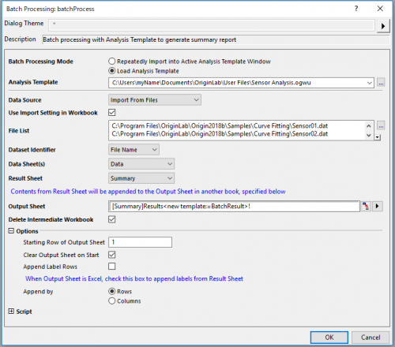
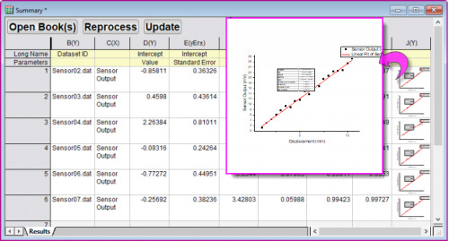

Stapelverarbeitung von mehreren Dateien mit Analysevorlage
AnalysisTemplate-BatchProcess
Zusammenfassung
Origin kann eine Stapelanalyse durchführen, wobei eine zuvor erstellte Analysevorlage verwendet wird, indem entweder mehrere Dateien importiert oder existierende Datensätze geladen werden.
Dieses Tutorial erläutert das Importieren von mehreren Textdateien mit einer gemeinsamen Dateistruktur und die anschließende Verarbeitung dieser Dateien mit Hilfe einer Analysevorlage, die zum Durchführen einer linearen Kurvenanpassung eingerichtet wurde.
 |
Auch wenn die Methode nicht so viele Optionen wie die Stapelverarbeitung bietet, können Sie Import- und Analyseoperationen in der aktiven Arbeitsmappe "klonen". Dazu verwenden Sie die Vorgehensweise, die in diesem Tutorial beschrieben wird.
|
Was Sie lernen werden
Dieses Tutorial zeigt Ihnen, wie Sie:
- eine Analysevorlage erstellen, die ein Ergebniszusammenfassungsblatt enthält, um die Ausgabe der Stapelverarbeitung zu sammeln.
- eine Stapelverarbeitung von mehreren Datendateien mit Hilfe einer Analysevorlage durchführen.
Schritte
Dieses Tutorial ist in zwei Abschnitte unterteilt:
- Sie richten eine Analysevorlage ein. Die Vorlage ist ein leeres Framework, das ein Zusammenfassungsblatt beinhaltet, um die Analyseausgabe der Stapelverabeitungsoperationen zu sammeln.
- Führen Sie die Stapelverarbeitung von mehreren Dateien mit Hilfe der zuvor gespeicherten Analysevorlage durch.
Analysevorlage vorbereiten, die ein Blatt mit der Ergebniszusammenfassung enthält
- Da Stapeloperationen mit ähnlich strukturierten Datendateien arbeiten, ist der erste Schritt das Importieren einer typischen Datendatei. Erstellen Sie eine neue Arbeitsmappe und wählen Sie Daten: Mit Datei verbinden: Text/CSV. Navigieren Sie zum Ordner <Origin-Verzeichnis>\ \Samples\Curve Fitting\ Sensor01.dat und wählen Sie die Datei. Übernehmen Sie die CSV-Importoptionen und klicken Sie auf OK, um Ihre Daten zu importieren.
- Jetzt führen wir eine lineare Anpassung für die Daten durch. Markieren Sie Spalte B(Y) und wählen Sie Analyse: Anpassen: Linearer Fit... Setzen Sie Neu berechnen = Auto und klicken Sie dann auf OK (Beachten Sie, dass wir durch Wählen von Auto sichergestellt haben, dass eine neue Eingabe die automatische Neuberechnung der Ergebnisse auslöst). Antworten Sie mit Ja auf die Erinnerung, um das Berichtsblatt FitLinear1 zu öffnen.
- Wir fügen jetzt ein Blatt für die Ergebnisse zu unserer Arbeitsmappe hinzu, in der wir Schlüsselstatistiken aus unserer Stapelanalyse sammeln. Gehen Sie zu FitLinear1 und dann zur Zusammenfassungstabelle, klicken Sie auf den nach unten weisenden Pfeil und wählen Sie Kopie als neues Blatt erstellen. Klicken Sie zuerst ZWEIMAL auf die Schaltfläche
 , um die zwei neuen Spalten zu Ihrem Zusammenfassungsblatt hinzuzufügen.
, um die zwei neuen Spalten zu Ihrem Zusammenfassungsblatt hinzuzufügen.
- Wir möchten den Wert von Pearsons r zu unserer Zusammenfassung hinzufügen und kehren deswegen zurück zu FitLinear1. Wir suchen die Statistiktabelle, klicken dann auf den Text neben dem Wert und klicken Sie mit der rechten Maustaste, um Kopieren zu wählen. Gehen Sie zur Zusammenfassung, klicken Sie mit der rechten Maustaste in die Zelle Parameter der Spalte G(Y) und wählen Sie Link einfügen. Kopieren Sie den Wert von Pearsons r und fügen Sie ihn über Link einfügen in Zeile 1 von Spalte G(Y) ein.
- Wir fügen nun eine Datenzeichnung mit Anpassungskurve zu unserem Zusammenfassungsblatt hinzu. Kehren Sie zu FitLinear1 zurück, scrollen Sie zum Angepassten Kurvendiagramm hinunter, klicken Sie mit der rechten Maustaste auf das Diagramm und wählen Sie Kopieren. Wechseln Sie zum Zusammenfassungsblatt, klicken Sie in Zeile 1 der Spalte H(Y) und wählen Sie Link einfügen. Fügen Sie die Anpassungskurve zur Zelle Langname in dieser Spalte hinzu.
- Um die Arbeitsmappe als eine Analysevorlage zu speichern, wählen Sie Datei: Arbeitsmappe als Analysevorlage speichern, übernehmen Sie den Standardspeicherort \Anwenderdateien und geben Sie der Vorlage den Namen Sensoranalyse. Klicken Sie auf Speichern.
Stapelverarbeitung von mehreren Datendateien durchführen
Wir verwenden jetzt unsere Analysevorlage, um eine Anzahl von Datendateien per Stapelverarbeitung zu analysieren und eine zusammengefasste Ausgabe zu erzeugen.
- Öffnen Sie ein neus Projekt und wählen Sie Datei: Stapelverarbeitung ... oder klicken Sie auf die Schaltfläche
 in der Symbolleiste Standard.
in der Symbolleiste Standard.
- Setzen Sie den Modus der Stapelverarbeitung = Analysevorlage laden, navigieren Sie dann zu Ihrem Anwenderdateiordner und wählen Sie Sensor Analysis.ogwu.
- Setzen Sie Datenquelle = Aus Dateien importieren und verwenden Sie die Schaltfläche rechts von Dateilliste, um zu <Origin-Verzeichnis>\Samples\Curve Fitting zu navigieren und die Dateien Sensor02.dat bis Sensor07.dat hinzuzufügen.
- Setzen Sie den Datensatzidentifizierer = Dateiname, um die Ausgabe in unserem Zusammenfassungsblatt mit dem Quelldateinamen kennzuzeichnen.
- Setzen Sie Datenblatt = Sensor01 und Ergebnisblatt auf Zusammenfassung.
- Aktivieren Sie Zwischenmappen löschen. (Beachten Sie, dass Sie seit Origin 2018 die Option haben, die Schaltfläche Open Book(s) im Zusammenfassungsblatt zu verwenden, um einzelne Zwischenmappen ggf. erneut zu erzeugen.)
- 
- Klicken Sie auf OK. Alle Datendateien werden verarbeitet und eine Zusammenfassungsmappe wird erzeugt, um die Analyse von jeder Datei zusammenzufassen.
- 